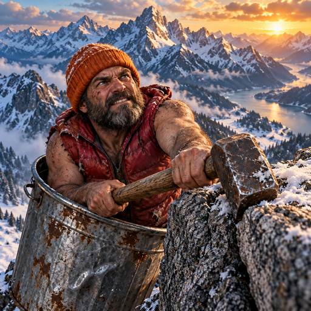
One hammer. One unforgiving ridge.
Promotional artwork above. Actual browser captures below; upper stages show a resumed recorded climb.
The route climbs right, with full overhead hammer reach.
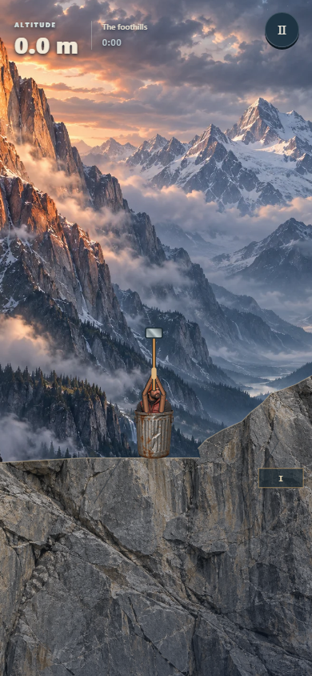
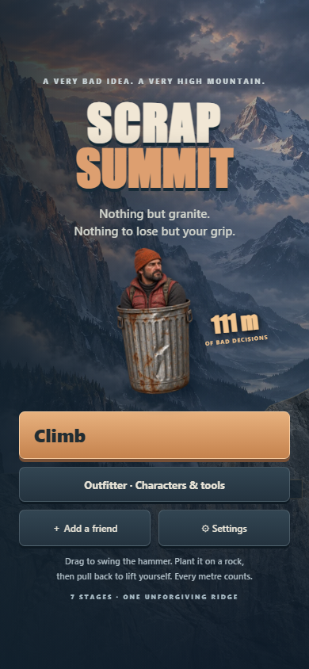
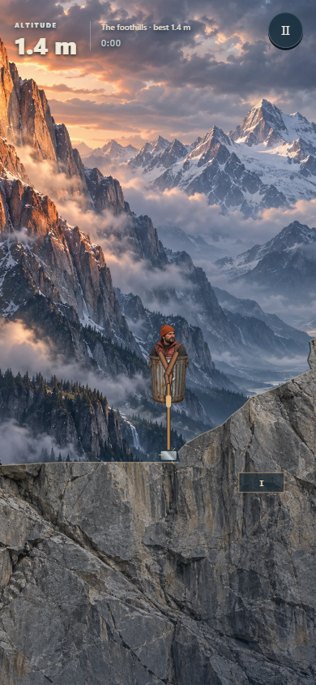
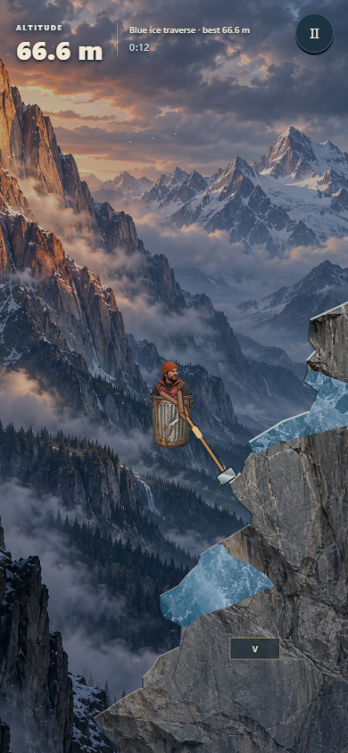
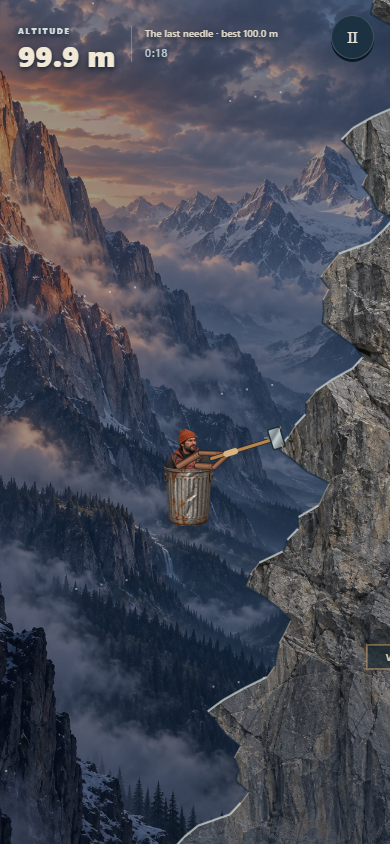
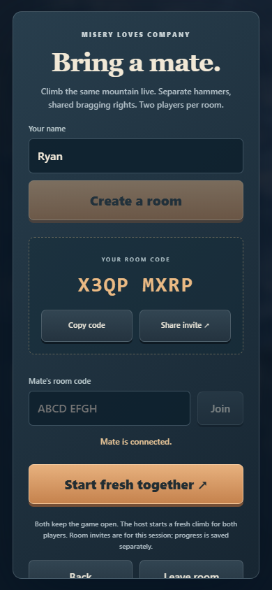
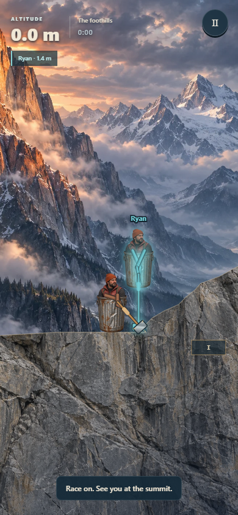
Five characters. Six tools. Every combination has identical climbing ability. Browser try-ons are previews; purchases are not yet enabled.
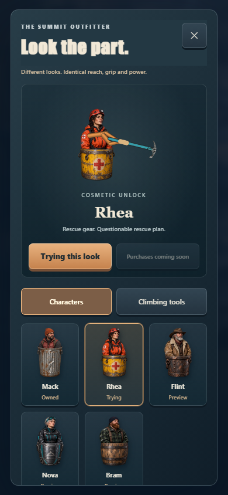
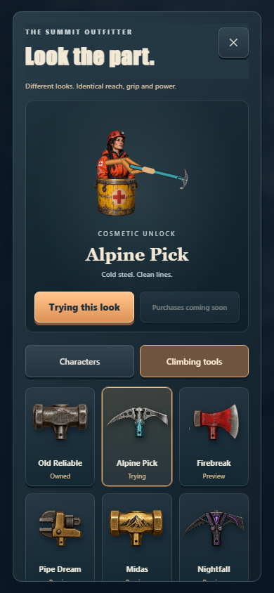
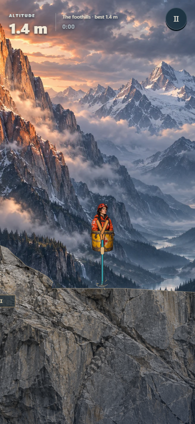
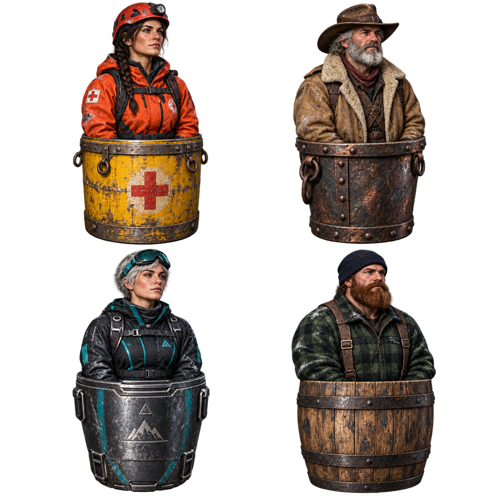
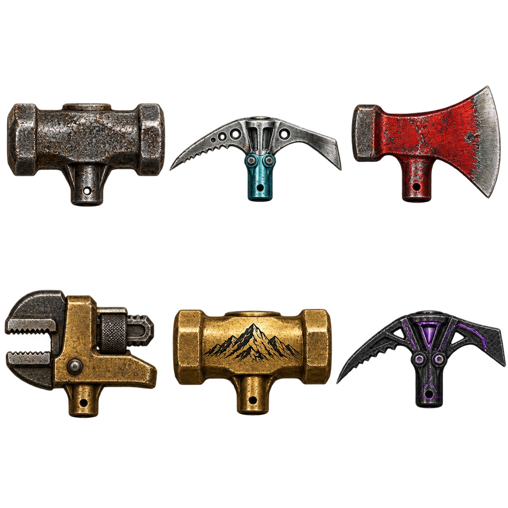